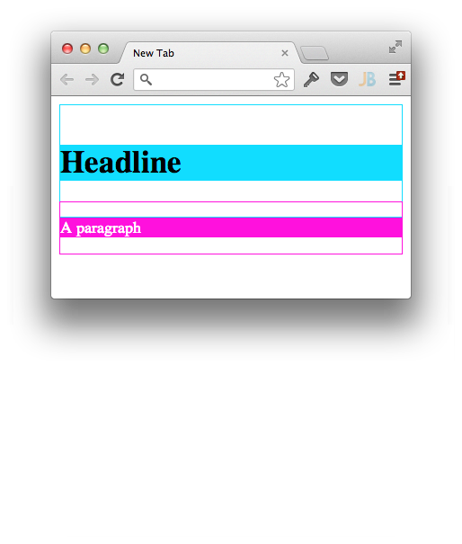
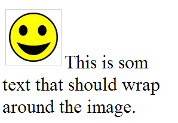
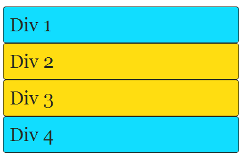
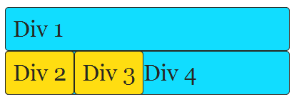
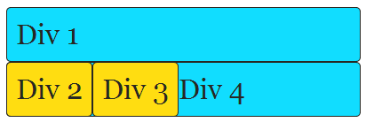
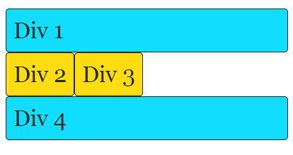
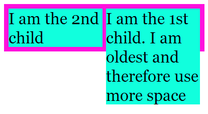
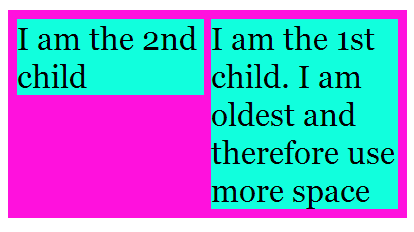

name: inverse class: center, middle, inverse --- template: inverse # CSS-workshop --- template: inverse class: slide-agenda # Agenda .agenda[ ## 1. Introduction to CSS ## 2. Layout ## 3. Structure ## 4. Tips & Tricks, CSS3 ] --- template: inverse # Introduction to CSS --- # HTML ### Structure ```html <!DOCTYPE html> <html> <head> <meta http-equiv="content-type" content="text/html; charset=utf-8" /> <title>HTML and CSS</title> </head> <body> <div> <h1>An HTML page!</h1> </div> <div> <p>A paragraph.</p> <p>Another paragraph.</p> </div> </body> </html> ``` --- class: middle center slide--with-image # Rendered HTML .img--large[ <img src="resultat uten css.png"> ] --- # CSS ### Style ```css h1 { background-color: #1df; } p { background-color: #f1d; color: white; } ``` --- class: middle center slide--with-image # Rendered HTML with CSS .img--large[ <img src="resultat med css.png"> ] --- class: middle center # Everything is a box! --- name: boxmodel class: slide-boxmodel # Box model .boxmodel[ .box.margin[ .box.border[ .box.padding[ .box.text[ Boxmodel ]]]]] .description.margin[Margin] .description.border[Border] .description.padding[Padding] .description.text[Content] --- class: center middle slide-selectors # CSS selector .selector[ ```css input#anId.aClass:checked[name="aName"] { property: value; } ``` ```html <input id="anId" class="aClass" type="checkbox" name="aName" /> ``` ] --- # Where do I put it? ### External stylesheet ```html <link rel="stylesheet" type="text/css" href="layout.css" /> ``` ### Style element ```html <style> p { color: blue; } </style> ``` ### Inline attribute ```html <p style="color: green;"> </p> ``` --- class: slide-priority # Styles have different priority .arrow[ ### Increasing priority .arrow-down[] ] .priorities[ .predefined[ ### Browser ] .predefined[ ### User ] .in-page[ ### `<link>` ] .in-page[ ### `<style>` ] .in-page[ ### `<p style="">` ] ] --- # CSS - Cascading Style Sheets Some css selector ```css h1 { margin: 10px; } ``` ..and later the same selector again.. ```css h1.fin-overskrift { color: green; } ``` --- # Properties cascade! ```css h1.fin-overskrift { margin: 10px; color: green; } ``` --- class: middle center # "The same property can be in multiple places?" --- class: middle center slide-specificity # Specificity ### "Which CSS rule is applied?" <ul class="specificity specificity--large"> <li>0 <li>0 <li>0 <li>0 </ul> --- #Specificity ```css p { color: green; } ``` <ul class="specificity"> <li>0 <li>0 <li>0 <li>1 </ul> ```css .highlighted { color: yellow; } ``` <ul class="specificity"> <li>0 <li>0 <li>1 <li>0 </ul> ```html <p class="highlighted"></p> ``` --- # Specificity ```css p { color: green; } ``` <ul class="specificity"> <li>0 <li>0 <li>0 <li>1 </ul> ```css .highlighted { color: yellow; } ``` <ul class="specificity"> <li>0 <li>0 <li>1 <li>0 </ul> ```css p.error { color: red; } ``` <ul class="specificity"> <li>0 <li>0 <li>1 <li>1 </ul> ```html <p class="error highlighted"></p> ``` --- # Oppgaver .task.task--inline[ ## Finn specificity for ] ```html <a style="color: blue;" class="fancy-link">link</a> ``` ```css .menu ul li.menu-item { } ``` ```css #navigation.menu ul li.menu-item a { } ``` ```css a { color: red !important; } ``` --- # important! ```css .menu ul li.menu-item { color: yellow; } ``` <ul class="specificity"> <li>0 <li>0 <li>2 <li>2 </ul> ```css #navigation.menu ul li.menu-item a { color: blue; } ``` <ul class="specificity"> <li>0 <li>1 <li>2 <li>3 </ul> ```css a { color: red !important; } ``` <ul class="specificity specificity--important"> <li>1 <li>0 <li>0 <li>0 <li>1 </ul> --- TODO torgeir bilde av masse !important --- class: middle center <img src="specificity-fish.png" class="specificity-fish" /> --- class: middle center <img src="specificity-starwars.jpg" class="specificity-starwars" /> --- # Inherited properties ## Some properties have a default value `inherit` ```css font-size: inherit; ``` ```css color: inherit; ``` --- class: middle center slide-oppgaver # Oppgavetema .task.task--inline[ ## Lag CSS for "adressa.no" ] ```bash git clone https://github.com/sorteberg/CSS-workshop ``` ```bash $ tree . ├── index.html ├── logo.png └── style.css ``` --- # Oppgave .task.task--inline[ ## Sentrer `.container`, så innholdet er maks 900px. ] ### Hint: `max-width` `margin` --- template: inverse # Layout --- class: middle center # The `display` property `block` `inline` `none` `inline-block` --- # display: block; ### New line ### Fills it's container ```html <p>Some text</p> <p>Some more text</p> ``` <p>"Some text"</p> <p>"Some more text"</p> ### Some elements default to this value `<p>` `<div>` `<form>` `...` ### Has width and height - `width` and `height` are modifiable --- # display: inline; ### Width of its content ### Does not disrupt text-flow ```html <p>Some text with a <a href="/site">link</a> inside</p> ``` "Some text with a <a href="/site">link</a> inside" ### Some elements default to this value `<a>` `<span>` `<img>` ### `width` and `height` are not modifiable --- name: displaynone class: slide-displaynone # display: none; ### Rendered as no element existed, but it's still there ### Used to hide element ### Some elements default to this value `<script>` `<style>` --- template: displaynone ## Trivia ```html <style style="display: block" contenteditable> .slide-displaynone { } </style> ``` <style style="display: block" contenteditable> .slide-displaynone { } </style> --- # display: inline-block; ### Acts like `display: inline` ### `width` and `height` are modifiable, like `display: block` ### No elements have this value as default --- # Collapsing margins ## Adjacent top and bottom margins collapse! .half-width[ ```html <h1>Headline</h1> <p>A paragraph</p> ``` ```css h1 { margin: 40px 0; } p { margin: 20px 0; } ``` ] .half-width[  ] --- template: boxmodel name: boxmodel2 ## Property `width` sets the width of the .text[Content], not the entire box! --- template: boxmodel2 name: boxmodel3 .task[Hvor bred blir `.box`?] .half-width[ ```css .box { width: 50px; padding: 10px; border: 1px solid black; } ``` ] --- template: boxmodel3 .center[ `width = 50px + 10px + 10px + 1px + 1px = 72px` ] --- class: middle center # box-sizing: border-box; .center[ `width = 50px` ] --- class: middle center # Float --- name: float # Float ### Wrapping text around images ```html <p> <img src="smile.png" alt="This is the image" /> This is som text that should wrap around the image. </p> ``` ```css img { float: right; } ``` .center[ <img src="float1.png" /> ] --- template: float .task[Float `.nyhet` sin `span` med publiseringsdato helt til høyre.] --- name: float2 # Float ### Content laid out ### Floated element taken out of flow ### Inserted and floated to either side ### Content recedes .half-width[  ] .half-width[  ] --- template: float2 .task[Få `footer`en til å ha to kolonner, med hver sin liste.] --- # Clearing floats ## `clear:` ### `left` - No floating elements to the left of me! ### `right` - No floating elements to the right of me! ### `both` - No floating elements to either side of me! --- name: clearingfloats1 # Clearing floats <br> ```css .div4 { clear: left; } ``` .half-width[  ] .half-width[  ] --- template: clearingfloats1 .task[Fiks at `span`en med publiseringsdato for `.nyhet` havner over nyhetsoverskriften.] --- # Clearfix ## What happens when we have ```html <div class="parent"> <div class="child child--first">I am the 1st child. I am oldest and therefore use more space</div> <div class="child">I am the 2nd child</div> </div> ``` ```css .child { width: 50%; } .child--first { float: right; } ``` --- # Clearfix ## Result .center[  ] --- # Clearfix ## We can fix this by setting the `overflow`-property on the `.parent` ```html <div class="parent"> <div class="child child--first">I am the 1st child. I am oldest and therefore use more space</div> <div class="child">I am the 2nd child</div> </div> ``` ```css .parent { overflow: auto; /* Clearfix */ } .child { width: 50%; } .child--first { float: right; } ``` --- # Clearfix .task[1 - Style `.nyhet` slik at nyheter vises i to kolonner. (Hint: her må du bruke en `nth-child`, som du allerede finner i koden!)<br>2 - Style `.meny` slik at alle menyelementer kommer på en rekke og gi `.meny` en bakgrunnsfarge.] ## Result .center[  ] --- class: middle center # The `position` property `static` `relative` `absolute` `fixed` --- # position: static; ### Default value ### Said to be 'non-positioned' ### Can not be offset with `top`, `right`, `bottom`, `left` --- # position: relative; ### Defaults to `static` position ### Offset from static position `top` `right` `bottom` `left` ### Other content is uneffected ```html <div style="border: 1px solid #fd1; width: 200px;"> <div style="position: relative; top: 10px; right: 10px; border: 1px solid #f1d"> This is the first child</div> <div style="border: 1px solid #1fd">This is the second child</div> </div> ``` <div style="border: 1px solid #fd1; width: 200px;"> <div style="position: relative; top: 10px; right: 10px; border: 1px solid #f1d">This is the first child</div> <div style="border: 1px solid #1fd">This is the second child</div> </div> --- # position: absolute; ### Defaults to `static` position ### **Relative** to nearest positioned parent ### **Offset** from edges of parent `top` `right` `bottom` `left` ```html <div style="position: relative; border: 1px solid #f1d; width: 100%; height: 100px;"> <div style="position: absolute; bottom: 10px; border: 1px solid #1df;"> Offset from top </div> <div style="position: absolute; bottom: 0; right: 0; border: 1px solid #1fd;"> Bottom right</div> </div> ``` <div style="position: relative; border: 1px solid #f1d; width: 100%; height: 100px;"> <div style="position: absolute; bottom: 10px; border: 1px solid #1df;"> Offset from top </div> <div style="position: absolute; bottom: 0; right: 0; border: 1px solid #1fd;"> Bottom right </div> </div> --- name: fixed # position: fixed; ### Like `position: absolute` ### **Relative** to the viewport --- template: fixed .task[Få søkeboksen helt til høyre i menyen med posisjonering.] --- template: inverse # Structure --- name: wrong # What's wrong with? --- template: wrong ```css p.green { background-color: green; } ``` ```html <p class="green"> Changes saved! </p> ``` --- # Naming ## Not after how it's styled ```css p.green { background-color: green; } ``` ## Name after what it is! ```css p.success { background-color: green; } ``` --- template: wrong ```css p.success { background-color: green; } ``` ```html <p class="success"> Changes saved! </p> ``` --- # Coupled HTML and CSS! ## Don't do ```css p.success { background-color: green; } ``` ## Witouth a tagname, it's less specific! ```css .success { background-color: green; } ``` --- # Reusable CSS ```html <section class="module"> <h1></h1> <ul> <li> <a></a> <li> <a></a> </ul> </section> ``` ```css .module { } .module h1 { } .module ul { } ``` --- # But what if ```html <section class="module"> <h1></h1> <div> <img> </div> </section> ``` ```css .module { } .module h1 { } .module ul { } .module div { } ``` --- # And ```html <section class="module"> <h2></h2> <p></p> </section> ``` ```css .module { } .module h1 { } .module ul { } .module div { } .module h2 { } .module p { } ``` --- # Not. Good. ```css .module { } .module h1 { } .module h2 { } .module ul, .module p, .module div { } ``` --- # Reusable parts ## Abstracts away types ```css .module { } .module-heading { } .module-content { } ``` --- name: reusable # Reusable! ```html <section class="module"> <h1 class="module-heading"></h1> <ul class="module-content"></ul> </section> ``` ```html <section class="module"> <h2 class="module-heading"></h2> <p class="module-content"></p> </section> ``` ```html <section class="module"> <h1 class="module-heading"></h1> <div class="module-content"> <img> </div> </section> ``` --- template: reusable .task[Style `.nyhet` slik at den kan tåle endringer i html!] --- # Reusable? ## Oppgaver .task.task--inline[ ### 1 - Endre `div.nyhet` til `article.nyhet` ### 2 - Endre `span` til `time` publiseringsdato. ### 3 - Det skal være to paragrafer ingress, men bare den første skal ha toppmarg! ] --- template: inverse # Hvem måtte endre i CSS'en? --- name: menus # Oppgave .task.task--inline[ ### "Andre-nivå elementer i menyen skal listes vertikalt" ] ```html <ul class="meny"> <li><a>Nyheter</a> <ul> <li><a>Innenriks</a> <li><a>Utenriks</a> </ul> <li><a>Sport</a> </ul> ``` --- # Løsning? ```css .meny li { float: left; } .meny li li { float: none; } ``` --- # Child-selectors! ## Only affect direct children ```css .meny > li { float: left; } ``` --- # Extendable components ## Specific component ```css .button {} ``` ## Variations extend it ```css .button--small {} .button--large {} /* Why not just .large? Other stuff is large too! */ ``` ```html <div> <button class="button button--large"> </div> ``` --- template: inverse # Tips & Tricks # CSS3 --- class: middle .task[Vis logoen `logo.png` til venstre for teksten "Norges eldste avis". Tips: `padding-left`.] ## Bruk `background` til bilder som har med layout å gjøre --- class: middle center .task[Bildene er alt for store! Fiks det med `max-width`.] # max-width --- class: middle center # :first-child, :last-child --- class: middle center # :nth-child() ### :nth-child(event) ### :nth-child(odd) ### :nth-child(2n) ### :nth-child(2n+1) ### :nth-child(7n-2) --- class: middle center # transform: .half-width[ ### rotate(25deg) <img src="smile.svg" style="-webkit-transform: rotate(25deg); height: 2em;" /> ### scale(2.1) <img src="smile.svg" style="-webkit-transform: scale(2.1); height: 2em;" /> ] .half-width[ ### skew(20deg) <img src="smile.svg" style="-webkit-transform: skew(20deg); height: 2em;" /> ### translate(100px, 10px) <img src="smile.svg" style="-webkit-transform: translate(100px, 10px); height: 2em;" /> ] --- class: middle center # transition .text-align-left[ ```css img { transition: all 2s ease-in-out .5s; } img:hover { transform: rotate(180deg); } ``` ] <img src="smile.svg" class="transition--image" /> --- class: middle center # :before, :after --- class: middle center # multiple backgrounds <div class="multiplebackgrounds"> </div> .text-align-left[ ```css div { background: url(vader.png) no-repeat bottom right, url(Wonderful-Beach.jpg) no-repeat center; background-size: 120px, 100%; } ``` ] --- class: middle center # LESS.js ### variables ### mixins, with arguments ### nesting ### color helpers ### +++ ---